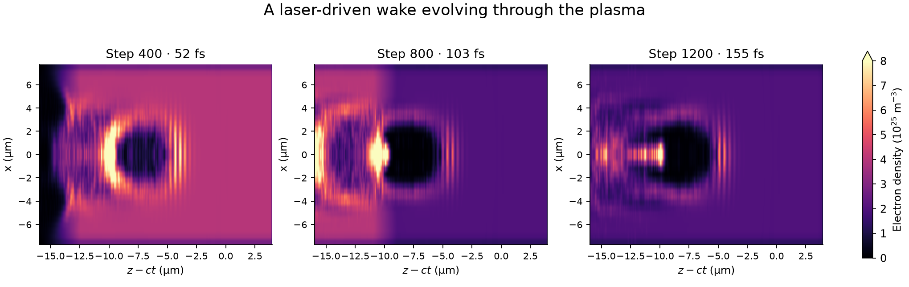

A Laser Wakefield Accelerator
Last updated on 2026-09-23 | Edit this page
Estimated time: 35 minutes
Overview
Questions
- 🏄 How can electrons catch a ride on a laser-driven plasma wave?
- 🧩 How do particles, a grid, and a moving window bring this system into the computer?
- 🔍 What can we discover in the density, electric-field, and energy plots?
Objectives
- 🔦 Identify the laser, plasma target, and wake in a reduced 3D simulation.
- 📏 Connect spatial and temporal resolution to the scales of the laser and plasma.
- 🚀 Run WarpX and visualize saved field and particle diagnostics.
- 🕵️ Distinguish evidence of a wake from evidence of a usable accelerated bunch.
Surfing a plasma wave
Imagine electrons surfing a wave, with a laser providing the push that creates it. 🏄 The wave here is a pattern of charge and electric field in a plasma, and riding the right part of it can give electrons energy.
A plasma contains free electrons and ions. An intense laser pulse pushes electrons out of its path. The heavier ions respond much more slowly, so the separation of positive and negative charge produces an electric field. The electrons move back toward the ions and can oscillate, leaving a wake behind the pulse. Electrons traveling in the appropriate part of that wake can gain energy from its electric field. This is laser-wakefield acceleration.
WarpX can model how a laser and plasma evolve together and how electrons respond to the resulting fields. Read Introduction to WarpX for the particle-in-cell (PIC) method. Here you will launch a laser into a small plasma target, watch the wake develop, and inspect the electron energy distribution. This reduced setup has been run on an 8 GB GPU.

The laser and the plasma
There are three members of the cast:
- 🔦 The laser: a short pulse traveling along z, with its electric field polarized along y. Its temporal and transverse envelopes are Gaussian.
- ⚡ The electrons: mobile particles that respond to the fields and form the wake.
- ⚓ The helium ions: a fixed positive background in this teaching model. Two electrons per fully ionized helium ion make the initial plasma neutral.
The plasma starts already ionized; we do not simulate the removal of electrons from atoms.
The target has an entrance ramp, a high-density region, a short density drop, and a lower-density region followed by an exit ramp. The drop changes the wake as the laser crosses it. Density transitions can help electrons become trapped in a wake, but a drop alone does not guarantee a useful accelerated bunch in this particular calculation.
| Physical setting | Default | Where to find it in the input |
|---|---|---|
| Laser wavelength | 0.8 µm | lambda0 |
| Dimensionless laser strength | a0 = 3 | a0 |
| Laser waist | 3 µm, field radius at 1/e of its peak |
w0, derived from spot_fwhm
|
| Pulse duration | 6 fs, intensity full width at half maximum | duration_fwhm |
| Laser focus | z = 10 µm | z_foc |
| Electron density before/after the drop | 4 × 10^25 / 2 × 10^25 m^-3 |
n_up, n_down
|
| Entrance ramp | z = 0–3 µm |
z_entrance, L_entrance
|
| Density drop | z = 20–22 µm |
z_transition, L_transition
|
| Exit ramp | z = 50–55 µm |
z_plasma_end, L_exit
|
The constants appear as my_constants.<name> in the
input.
Represent the accelerator numerically
WarpX samples the plasma with computational particles and evolves the electric and magnetic fields on a 3D Cartesian grid. Particles and fields affect one another at each step. The input selects the CKC electromagnetic solver and a first-order particle shape, which distributes a macroparticle’s charge to nearby grid points.
The simulation domain moves along z to follow the laser. Think of the moving window as a camera following the action 🎥. It moves at the speed of light, keeping the laser and wake in view. Fresh plasma is loaded as the window advances into the target, while material behind it leaves the calculation. This keeps the computational volume small without shortening the target to the instantaneous box length. Absorbing field and particle boundaries allow outgoing disturbances and particles to leave the domain.
| Numerical setting | Default |
|---|---|
| Moving box size | 16 × 16 × 20 µm |
| Grid cells | 32 × 32 × 512 = 524,288 |
| Cell spacing | 0.5 × 0.5 × 0.0390625 µm |
| Initial sampling where plasma is loaded | One macroparticle per cell per species |
| Time step | Approximately 0.129 fs |
| Number of steps | 1,836 |
| Saved diagnostics | Every 200 steps and at the end |
📏 These tiny scales explain the computing work. The longitudinal spacing samples the laser wavelength with about 20 cells. With this solver, the smallest cell spacing also constrains the time step. Finer resolution therefore increases both the work per step and the number of steps needed for the same physical duration. A GPU executes many particle and grid operations concurrently.
Get ready to run
Use a WarpX installation with 3D support. The Python script requires
pywarpx, and diagnostic output requires openPMD support.
Analysis uses Jupyter, NumPy, Matplotlib, SciPy, and
openpmd-viewer. A GPU run needs a GPU-enabled WarpX build.
The tutorial
container provides the software and instructions for GPU access. For
other systems, see the WarpX
installation documentation. CPU execution is also possible, but can
take substantially longer.
Use these files in episodes/files/laser-wakefield/:
-
Analysis
notebook and helper
script in
laser-wakefield/lwfa_warpx/. -
Input
file and Python
driver together in
laser-wakefield/lwfa_warpx/.
Download the example
In a JupyterLab terminal, start in a folder visible in the file
browser. If laser-wakefield/ is missing, download the
repository archive and extract only this example:
BASH
wakefield_archive=$(mktemp)
curl -fL https://github.com/BLAST-WarpX/warpx-tutorials/archive/refs/heads/main.tar.gz \
-o "$wakefield_archive" && \
tar -xzf "$wakefield_archive" --strip-components=3 \
warpx-tutorials-main/episodes/files/laser-wakefield
rm -f "$wakefield_archive"This creates laser-wakefield/ in your current directory.
Refresh the file browser to see it. If the folder already exists, use it
and preserve any modified inputs or previous results before downloading
a replacement.
Launch the laser! 🚀
From laser-wakefield/, activate your WarpX environment
and run:
In the tutorial container, activate the GPU environment with
source /opt/venv-gpu/bin/activate before this command. On
other systems, activate your own installation. With a native WarpX
executable, you can instead use
warpx.3d lwfa_warpx_input.txt from the same directory.
The driver reads the input file and saves diagnostics under
diags/diag1. It does not create a new
output directory for each run. Before repeating, preserve the completed
diags/ folder and run.log under new, unused
names. The elapsed time reported by time is the computer’s
runtime, distinct from the femtoseconds covered by the simulated plasma
evolution.
⏱️ While WarpX works, peek at its progress with
tail -n 20 run.log in a second terminal in the same
directory. A previously completed run with these settings took 8
minutes 25 seconds on an RTX A2000 8 GB laptop GPU. Runtime
will differ on other machines. When the prompt returns, check the log
for successful completion before opening the diagnostics.
While it runs, look at the parameter tables above. Which direction has the smallest grid spacing? How does that choice help us follow the laser?
Interpret the results
Open wakefield.ipynb
from the laser-wakefield/lwfa_warpx folder after the run
finishes. Select the kernel containing the analysis packages; in the
tutorial container, WarpX GPU provides them. Plotting
saved data itself does not require a GPU. The notebook reads
diags/diag1 and does not launch the simulation.
Time to see what happened! 🔍 Use the three plots together:
- 🫧 Find the cavity — electron density: a slice at y = 0 reveals the electron-depleted cavity and the surrounding concentration of electrons. The three-frame figure uses a shared color scale and the coordinate z−ct, which moves at the speed of light to keep the wake in view. Compare how the cavity changes as the laser crosses the density drop.
- ⚡ Find the push — longitudinal electric field, Ez: positive and negative regions show the direction of the field along the beam axis. Electrons have negative charge, so the longitudinal electric force is opposite to Ez. An electron moving forward can gain energy where this force points forward. In the single-snapshot figure, white contours on the density panel show the magnitude of Ey to help locate the pulse. Ey is the total transverse electric field and also includes plasma fields.
- 📈 Find the energetic electrons — the energy spectrum: the horizontal axis is kinetic energy and the vertical axis is charge magnitude per energy bin. Particle weights account for the physical electrons represented by each macroparticle. The spectrum includes all electrons in the moving window, not a selected bunch.
The single-snapshot density and field panels use laboratory z, while the three-frame density figure uses z−ct. Read the axis labels when comparing them. Choose a saved step during propagation: the last frame is after the moving window has passed the plasma and is less useful for viewing the wake.
💡 Follow the clues: locate the laser contours, then the cavity behind it. Find a region where the electric field would accelerate a forward-moving electron. Finally, inspect the energy spectrum. These views tell different parts of the same story; the spectrum alone does not show where those electrons are.
To save your figures without opening Jupyter, run these commands from
lwfa_warpx/:
Your turn: change one thing 🎛️
Keep the baseline input and results so you have something to compare with. Then choose one of these experiments. Make a prediction before rerunning!
Turn the laser knob 🔦
Change my_constants.a0, the laser strength, and rerun.
Compare the cavity, Ez, and spectrum at the same saved step. Does the
cavity change shape? Does the high-energy part of the spectrum change
too?
Alternatively, set n_up equal to n_down to
remove the density drop while keeping the entrance and exit ramps. Watch
how the wake evolves through the region where the drop used to be.
Change one parameter at a time so you can connect a difference in the
plots to a change in the input.
Take fewer snapshots 📸
Change diag1.intervals from 200 to
400, then compare elapsed runtime, disk use
(du -sh diags), and the available snapshots. What do you
save in storage, and which moments can you no longer inspect?
The physical input and time steps are unchanged; only the saved history is less frequent. Compare a step saved in both runs. The computer still has to advance through every time step, even when it does not save a snapshot!
How far can we trust the picture? 🔍
A striking picture is a starting point for investigation. The compact laser and target make this visual demonstration practical. The simulation uses fixed, already-ionized helium ions, low particle sampling, and a grid that has not been refined to establish numerical convergence. It does not establish experimental beam quality or a target beam energy.
A wake and a high-energy tail demonstrate different things. Identifying a usable accelerated bunch also requires examining its spatial and momentum distribution, charge, and evolution after it leaves the plasma.
For other laser-wakefield configurations, including the role of geometry, see the official WarpX LWFA examples. The numerical choices here belong to this reduced teaching model and should be reassessed for a research calculation.
- 🏄 A laser drives a plasma wake; its longitudinal field can accelerate electrons.
- 🧩 The grid, particles, and time steps determine which features are resolved and how much computation is required.
- 🔍 Density, field, and energy plots provide complementary evidence; an energy spectrum alone does not identify an accelerated bunch.
- 🎛️ Save the baseline and vary one setting at a time to interpret changes.